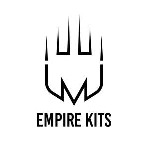

Trade Mark Journal No.2025/022 30 May 2025
UK00004204733 16 May 2025 (25)

- Class 25
- Sportswear; Casualwear; Ready-to-wear clothing; Knitwear [clothing]; Sports footwear; Clothing for sports; Sports clothing; Footwear for sports; Shoes for leisurewear; Sports garments; Athletic clothing; Footwear for sport; Footwear for use in sport; Jackets being sports clothing; Athletic footwear; Men's clothing; Menswear; Athletics footwear; Triathlon clothing; Leisurewear; Footwear; Leisure footwear; Sneakers [footwear]; Gymwear; Outerwear; Clothing for cycling; Sports clothing [other than golf gloves]; Footwear for snowboarding; Gloves for apparel; Casual footwear; Moisture-wicking sports shirts; Golf footwear; Clothes for sports; Leisure clothing; Surfwear; Denims [clothing]; Clothing; Jerseys [clothing]; Shorts [clothing]; Footwear for women; Footwear for men; Sports shirts; Casual clothing; Clothes for sport; Clothing for leisure wear; Clothing for gymnastics; Sportswear incorporating digital sensors; Sport shirts; Beach footwear; Knitwear; Swimwear; Cashmere clothing; Footwear not for sports; Clothing for skiing; Jackets [clothing]; Trainers [footwear]; Playsuits [clothing]; Footwear [excluding orthopedic footwear]; Moisture-wicking sports pants; Beachwear; Men's underwear; Woolen clothing; Sports jackets; Fishing footwear; Parts of clothing, footwear and headgear; Golf clothing, other than gloves; Windproof clothing; Gabardines [clothing]; Sports shoes; Water-resistant clothing; Jogging bottoms [clothing]; Articles of sports clothing; Quilted jackets [clothing]; Knitted clothing; Tennis pullovers; Embroidered clothing; Dance clothing; Beach clothing; Oilskins [clothing]; Loungewear; Jogging sets [clothing]; Rainwear; Clothing for cyclists; Sport shoes; Garments for protecting clothing; Leather clothing; Clothing of leather; Leather (Clothing of -); Foulards [clothing articles]; Woven clothing; Sports pants; Corsets [clothing, foundation garments]; Moisture-wicking sports bras; Tennis shirts; Fishing clothing; Climbing footwear; Maillots [hosiery]; Soccer shirts; Clothing for wear in judo practices; Sports jerseys and breeches for sports; Linen clothing; Tracksuits.
RJD Trading LTD